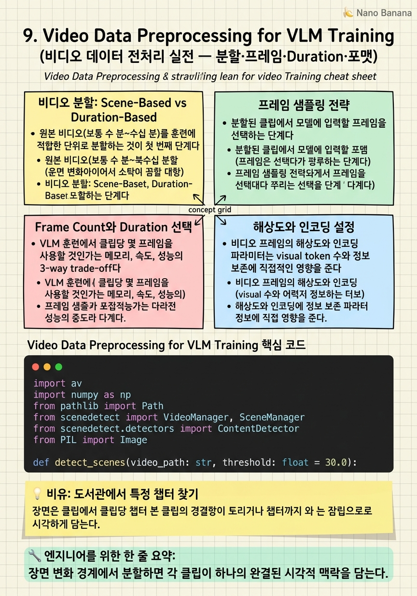

Video Data Preprocessing for VLM Training

🎯 학습 목표
- PySceneDetect를 이용한 장면 기반 비디오 분할 방법을 구현할 수 있다
- Uniform, keyframe, adaptive 샘플링의 장단점을 태스크별로 설명할 수 있다
- VLM 훈련에서 최적의 frame count와 duration 범위 선택 기준을 제시할 수 있다
- 해상도와 FPS가 visual token 수와 메모리에 미치는 영향을 계산할 수 있다
- Temporal grounding annotation 파이프라인을 설계할 수 있다
비디오 데이터 전처리는 VLM 훈련에서 가장 실무적으로 중요하지만 논문에서 잘 다루지 않는 영역이다. 같은 모델과 같은 훈련 코드를 사용해도 비디오 전처리 방식에 따라 최종 성능이 크게 달라진다. 이 챕터에서는 비디오를 처음부터 끝까지 처리하는 파이프라인을 단계별로 다룬다.
비디오 전처리의 핵심 결정 사항: (1) 어떻게 자를 것인가 — 원본 비디오를 훈련에 적합한 단위로 분할하는 전략. (2) 어떤 프레임을 선택할 것인가 — 전체 비디오에서 대표 프레임을 추출하는 방법. (3) 얼마나 많은 프레임을 사용할 것인가 — context window 제약 내에서 정보량 최대화. (4) 어떤 해상도로 인코딩할 것인가 — visual token 수와 정보 밀도의 trade-off.
실제 경험상 temporal grounding을 위한 비디오는 10-60초 단위, 1fps 샘플링, 360×640 해상도가 실용적인 시작점이다. 하지만 이는 태스크와 모델에 따라 크게 달라진다.
핵심 내용
비디오 분할: Scene-Based vs Duration-Based
원본 비디오(보통 수 분~수십 분)를 훈련에 적합한 단위로 분할하는 것이 첫 번째 단계다.
Duration-based 분할: 고정된 길이(예: 30초, 1분)로 단순 분할. 구현이 단순하지만 장면 중간에서 잘릴 수 있어 시각적 일관성이 없는 클립이 생성된다.
Scene-based 분할 (권장): 장면 변화를 감지하여 의미 있는 단위로 분할. PySceneDetect를 사용하면 ContentDetector(픽셀 변화 기반) 또는 ThresholdDetector(밝기 기반)로 장면 경계를 탐지한다.
분할 후 필터링: - 너무 짧은 클립(< 3초) 제거: 의미 있는 이벤트를 포함하기 어렵다 - 너무 긴 클립(> 180초) 제거: context window 소비 과다 - 낮은 품질 클립 제거: 시각적으로 흐리거나 어두운 클립
Temporal grounding 특화: 이미 annotation이 있는 경우, annotation된 구간 ± margin으로 클립을 구성한다. 예: annotation이 [15.0, 25.0]이면 [0.0, 40.0] 구간을 클립으로 사용. 이벤트가 클립 중 어느 구간에 위치하는지 알아야 relative timestamp annotation이 가능하다.
프레임 샘플링 전략
분할된 클립에서 모델에 입력할 프레임을 선택하는 단계다. 방법에 따라 표현하는 정보가 달라진다.
Uniform 샘플링 (가장 일반적): 클립을 N개 구간으로 나누어 각 구간의 중간 프레임을 선택. 구현이 단순하고 시간 분포가 고르다.
def uniform_sample(total_frames, n_frames):
indices = np.linspace(0, total_frames-1, n_frames, dtype=int)
return indices
Keyframe 추출: 장면 변화나 움직임이 클 때의 프레임을 우선 선택. 정보 밀도가 높다.
Adaptive 샘플링: 움직임 정도에 비례하여 샘플링 밀도를 조절. 정적 배경은 적게, 빠른 액션은 많이 샘플링. 계산 비용이 높지만 정보 효율이 좋다.
Temporal grounding에서의 고려사항: 이벤트 발생 구간(annotation 구간)에 더 많은 프레임을 할당하면 세밀한 temporal 이해에 도움이 된다. 단, 이 정보를 모델이 알 수 없는 추론 상황과 align되어야 한다.
Frame Count와 Duration 선택
VLM 훈련에서 클립당 몇 프레임을 사용할 것인가는 메모리, 속도, 성능의 3-way trade-off다.
메모리 계산 예시 (Qwen3-VL, max_pixels=360×420): - 1프레임 ≈ 360×420 / (28×28) = 19.3 visual tokens ≈ 약 20 tokens - 8프레임 = 160 tokens, 32프레임 = 640 tokens, 64프레임 = 1280 tokens - LLM context 4096 토큰에서 64프레임이면 visual token만 1280 → text에 2816 tokens 남음
실용적 가이드라인:
| 태스크 | 권장 frame count | 권장 duration | 이유 |
|---|---|---|---|
| General Video QA | 8-16 | 30-60초 | 전반적 이해 충분 |
| Temporal Grounding | 16-32 | 15-60초 | 정밀한 시간 추론 필요 |
| Action Recognition | 8-16 | 5-20초 | 짧은 액션 포착 |
| Dense Caption | 32-64 | 60-180초 | 다수 이벤트 커버 |
Duration 선택: 훈련 데이터의 duration 분포를 벤치마크의 duration 분포와 맞추는 것이 중요하다. Charades-STA의 평균 비디오 길이는 ~30초, ActivityNet-Captions는 ~3분. 훈련 데이터가 너무 짧거나 길면 도메인 불일치가 발생한다.
해상도와 인코딩 설정
비디오 프레임의 해상도와 인코딩 파라미터는 visual token 수와 정보 보존에 직접적인 영향을 준다.
해상도 선택 기준:
- Visual token 수 = (H × W) / (patch_size^2)
- Qwen3-VL patch_size = 28 pixels
- 360×640 해상도 → (360×640) / (28×28) = 293 tokens/frame
- 720×1280 해상도 → 1172 tokens/frame (4배)
권장 해상도 by 태스크:
- 일반 비디오 QA: 360×640 (short side 360)
- Temporal grounding: 360×640 to 480×854
- Fine-grained detail 필요: 480×854 이상
- OCR/Document: 720p 이상 권장
인코딩 설정 (ffmpeg):
- Video codec: H.264 (호환성 우수) 또는 H.265 (압축률 높음)
- 프레임 추출 시 PNG (무손실) 또는 JPEG quality=95 사용
- 색상 공간: YUV420p → RGB 변환 필수 (VLM은 RGB 입력)
실전 팁: 원본 비디오를 처음부터 낮은 해상도로 리사이즈하지 말고, 원본을 보존하면서 프레임 추출 시 타겟 해상도로 변환한다. 원본 해상도 정보는 annotation 검증과 좌표 변환에 필요하다.
Annotation 파이프라인과 품질 검증
Temporal grounding annotation은 시작/종료 타임스탬프와 텍스트 쿼리의 쌍으로 구성된다. 이 데이터의 품질이 훈련 결과를 결정한다.
자동 annotation 파이프라인:
- 기존 annotation 데이터셋 활용 (Charades-STA, ActivityNet-Captions)
- GPT-4o를 이용한 비디오 설명 → 타임스탬프 역추적
- 비디오 프레임에서 물체 탐지 후 시간 범위 추정
수동 annotation 품질 기준:
- Annotator 간 IoU 일치도 ≥ 0.7 (inconsistent 제거)
- 이벤트가 명확히 시각적으로 확인 가능한 경우만 포함
- 쿼리 텍스트가 이미지/비디오 없이도 명확해야 함 (모호한 쿼리 제거)
자동 품질 필터링:
def filter_grounding_sample(sample):
# 너무 짧은 이벤트 제거 (< 2초)
if sample['end'] - sample['start'] < 2.0:
return False
# 비디오 전체를 커버하는 annotation 제거 (정보 없음)
duration_ratio = (sample['end'] - sample['start']) / sample['video_duration']
if duration_ratio > 0.9:
return False
# 쿼리 길이 필터
if len(sample['query'].split()) < 3 or len(sample['query'].split()) > 30:
return False
return True
💡 비유로 이해하기
비디오 전처리는 수백 권의 책(원본 비디오)에서 학습자가 공부할 챕터(클립)를 선별하고, 각 챕터에서 중요한 단락(프레임)을 표시하는 과정이다. 책 전체를 주면 학습자가 중요한 내용을 찾기 어렵다. 너무 짧게 자르면 맥락이 사라진다.
장면 기반 분할(scene detection)은 책의 목차를 보고 챕터 경계를 찾는 것이다. 내용이 바뀌는 지점에서 자르면 각 클립이 하나의 완결된 이야기를 담는다. Duration 기반 분할은 50페이지씩 무조건 자르는 것 — 중요한 내용이 챕터 경계에서 잘릴 수 있다.
프레임 샘플링은 독서 중 '중요한 그림'에 마커를 붙이는 것이다. 모든 그림을 다 볼 시간은 없으니 가장 정보량이 많은 그림을 선택한다. Uniform 샘플링은 100페이지마다 하나, Adaptive 샘플링은 그림이 많은 섹션에서 더 자주 마커를 붙이는 것이다.
💻 코드 예시
PyAV와 scenedetect를 사용하여 비디오를 scene 기반으로 분할하고, 각 클립에서 uniform frame sampling을 수행하는 완전한 파이프라인이다.
import av
import numpy as np
from pathlib import Path
from scenedetect import VideoManager, SceneManager
from scenedetect.detectors import ContentDetector
from PIL import Image
def detect_scenes(video_path: str, threshold: float = 30.0):
"""ContentDetector로 장면 경계 탐지"""
video_mgr = VideoManager([video_path])
scene_mgr = SceneManager()
scene_mgr.add_detector(ContentDetector(threshold=threshold))
video_mgr.start()
scene_mgr.detect_scenes(frame_source=video_mgr)
scene_list = scene_mgr.get_scene_list()
video_mgr.release()
return scene_list # [(start_timecode, end_timecode), ...]
def extract_frames_uniform(
video_path: str,
start_sec: float,
end_sec: float,
n_frames: int,
target_short_side: int = 360,
) -> list[np.ndarray]:
"""클립에서 uniform 샘플링으로 N개 프레임 추출"""
container = av.open(video_path)
stream = container.streams.video[0]
fps = float(stream.average_rate)
total_frames = int((end_sec - start_sec) * fps)
# 균일하게 N개 프레임 인덱스 선택
indices = np.linspace(0, total_frames - 1, n_frames, dtype=int)
target_times = [start_sec + idx / fps for idx in indices]
frames = []
for target_time in target_times:
container.seek(int(target_time * av.time_base), backward=True)
for frame in container.decode(video=0):
img = frame.to_image() # PIL Image (RGB)
# 짧은 변이 target_short_side가 되도록 resize
w, h = img.size
ratio = target_short_side / min(w, h)
new_size = (int(w * ratio), int(h * ratio))
img = img.resize(new_size, Image.LANCZOS)
frames.append(np.array(img))
break
container.close()
return frames
def process_video(video_path: str, output_dir: str, n_frames: int = 16):
"""비디오 → 장면 분할 → 프레임 추출 → 저장"""
Path(output_dir).mkdir(parents=True, exist_ok=True)
scenes = detect_scenes(video_path)
clips = []
for i, (start, end) in enumerate(scenes):
start_sec = start.get_seconds()
end_sec = end.get_seconds()
duration = end_sec - start_sec
if duration < 3.0 or duration > 180.0: # 품질 필터
continue
frames = extract_frames_uniform(video_path, start_sec, end_sec, n_frames)
clips.append({"clip_id": i, "start": start_sec, "end": end_sec,
"frames": frames, "n_frames": len(frames)})
return clipsContentDetector(threshold=30.0)는 연속 프레임 사이의 픽셀 변화가 30% 이상이면 장면 경계로 탐지한다. 임계값을 높이면 적게 자르고, 낮추면 더 세밀하게 자른다. np.linspace(0, total_frames-1, n_frames)는 클립 내 균등 분포를 보장한다. target_short_side=360으로 짧은 쪽이 360픽셀이 되도록 리사이즈하면 Qwen3-VL에서 클립당 약 20-30 visual tokens per frame이 생성된다.
🏭 현업에서의 평가
✅ 시니어가 보는 것
- Frame count와 해상도가 visual token 수에 미치는 영향을 즉석에서 계산하는 능력
- Scene-based vs duration-based 분할의 실전 trade-off 경험
- Annotation 품질 필터링 기준 설계 경험 (IoU 일치도, 이벤트 명확성 등)
- 비디오 처리 파이프라인 확장성 설계 경험 (수백만 클립 처리)
- 각 전처리 선택이 최종 모델 성능에 미친 영향을 측정한 경험
⚠️ 레드 플래그
- Frame count를 늘리면 항상 성능이 향상된다고 생각하는 경우 (context window 제약 무시)
- Scene detection 파라미터를 조정해본 경험 없이 default를 사용하는 경우
- Duration 선택 기준을 벤치마크 분포와 연계하여 생각하지 못하는 경우
- 해상도 리사이즈 시 aspect ratio를 유지하지 않는 경우
🎤 예상 인터뷰 질문
- 32 frames × 360×640 해상도로 Qwen3-VL을 훈련할 때 클립당 visual token 수는 몇 개인가요? Context window 제약과 어떻게 균형을 잡겠나요?
- 비디오 전처리 파이프라인에서 가장 어려웠던 문제와 해결 방법을 설명해주세요.
- Temporal grounding annotation에서 annotator 간 일치도가 낮을 때 어떻게 처리하겠나요?
✨ 핵심 요약
Scene-based 분할이 duration-based보다 의미 있는 클립 생성
장면 변화 경계에서 분할하면 각 클립이 하나의 완결된 시각적 맥락을 담는다.
Visual token budget = frame count × tokens/frame
16 frames × 20 tokens/frame = 320 visual tokens. 4096 context에서 text에 3776 tokens 남음.
Uniform 샘플링이 실용적 기준점
구현이 단순하고 결과가 예측 가능하다. 성능 향상이 필요하면 adaptive 샘플링으로 업그레이드.
Duration 분포를 벤치마크와 매칭
훈련 데이터 duration이 평가 벤치마크와 크게 다르면 distribution mismatch가 발생한다.
짧은 변 360px이 실용적 시작점
Qwen3-VL 기준 클립당 약 20-30 tokens/frame. 세밀한 태스크는 480px 이상 고려.
Annotation 품질 필터링 기준 3가지
① 이벤트 duration < 2초 제거, ② 비디오 90% 이상 커버 제거, ③ 쿼리 길이 3-30단어 범위.
원본 해상도 보존이 나중을 위해 중요
전처리 시 해상도를 낮추면 나중에 다른 해상도로 재훈련할 때 재처리가 필요하다. 원본 보존 권장.